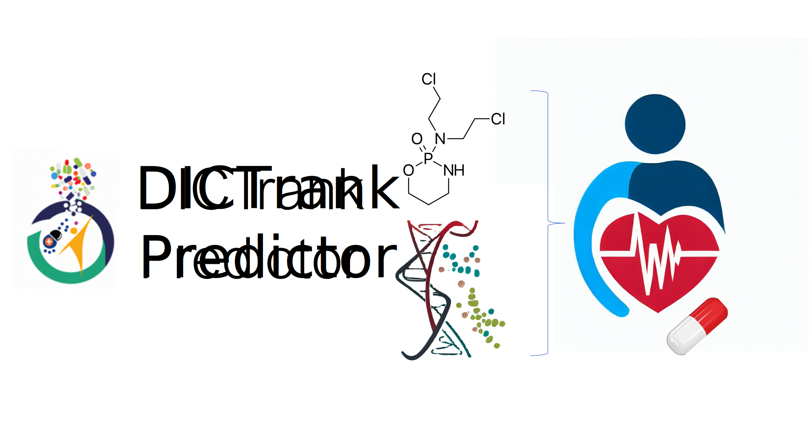

Welcome
About
Dataset
Contact
View it on GitHub

Insights into Drug Cardiotoxicity from Biological and Chemical Data: The First Public Classifiers for FDA DICTrank
Access bioaRxiv paper now
The original DICTrank dataset released by the FDA can be found
here